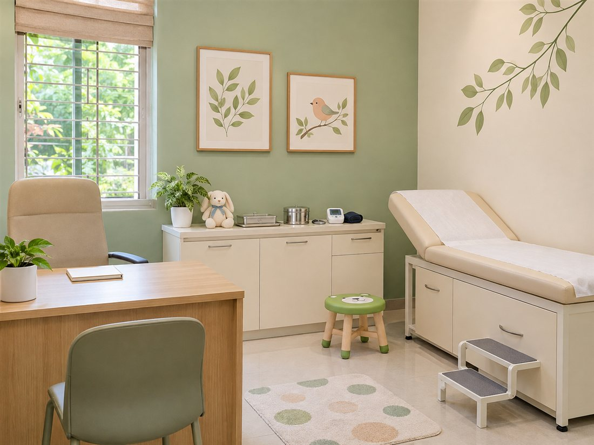

Little steps. Healthy beginnings.Growing up,
2014Practising since 3Languages 2Consultation modes
Dr. Aarav Menon
PediatricianMBBS, MD (Pediatrics)
Medical Regd. No.: Illustrative profile
English, Hindi, Kannada
Growing up,
together.
From first smiles to new school days, thoughtful pediatric care that makes room for every child — and every parent’s questions.
Small patients. Big possibilities.Care that grows with your family.
A little listening goes a long way.
Meet your pediatricianA familiar face.
A familiar face.
A thoughtful approach.
Every child has their own story. Their care should make space for it.
Dr. Aarav Menon is a pediatrician whose approach centres on listening to children and understanding the people who care for them. He brings a calm, practical style to conversations about childhood health, from the first weeks of life through the school years.
At Little Steps Children’s Clinic, appointments make time for a child’s symptoms, growth, daily routines and the questions on a parent’s mind. Dr. Menon explains the assessment and the next steps in clear language, so families leave knowing what has been discussed and how to follow up.
His practice includes newborn and infant reviews, growth and development discussions, vaccination visits, common childhood concerns and adolescent health. Clinic visits and suitable online follow-ups help families stay connected as their children grow.
Care at every stageFor the everyday.
For the everyday.
And the growing-up days.
A range of pediatric services, with your child’s comfort and your family’s questions at the centre.
Newborn & infant care
A calm start for growing families, with newborn check-ups and time to discuss feeding, sleep and early development.
Growth & development
Regular reviews of your child’s growth and milestones, with space to discuss their individual needs.
Vaccination visits
Review of vaccination records and a personalised discussion of the next steps in your child’s care.
Everyday childhood concerns
Pediatric consultations for fever, cough, digestive concerns and other common childhood symptoms.
Nutrition & feeding
Practical conversations about feeding, mealtimes and nutrition, tailored to your child’s stage of growth.
School-age & adolescent care
An approachable space to discuss school-age health, changing routines and the transition into adolescence.
A space to feel at ease
Care philosophyLittle people.
Little people.
Whole-person care.
Children do better when they feel heard. Parents do too.
Listen first
Time to understand your child, their routines and the concerns you bring.
Explain clearly
Straightforward conversations about the assessment and the next steps.
Grow together
Continuity of care as your child’s needs change, one milestone at a time.
Consultation journey
What to expect
A clear, comfortable path from your first question to the next step in care.
01
Appointment booking
Choose a clinic visit or an online consultation and a suitable available time.
02
A conversation & assessment
Share your child’s concerns, history and records with the pediatrician.
03
A plan you understand
Discuss the assessment and an individual care plan in clear, practical language.
04
Follow-up & growing well
Review progress and arrange follow-up as your child’s needs change.
Let’s make a little progress
Your next visit starts here.
Find the clinic, get in touch, or choose a time to talk.
Visit the clinic
Little Steps Children’s Clinic
24, Garden Avenue, Indiranagar
Bengaluru, Karnataka – 560038
Get in touch
A welcoming space
Room for little discoveries.
A glimpse of a child-friendly setting, designed for calmer visits.

A few helpful answersFrequently
Frequently
asked questions.
For the questions that come before the appointment.
The practice welcomes newborns, infants, children and adolescents. Contact the clinic if you would like to check whether a particular concern is suitable for a pediatric appointment.
Bring your child’s vaccination card, growth records, previous prescriptions, relevant test reports and a list of current medicines. A short note of your questions can help you make the most of the visit.
Online consultations are available for suitable concerns and follow-ups. Select Online Consultation when booking. The doctor may recommend a clinic visit if a physical examination is needed.
Yes. Bring the vaccination card so the doctor can review the record and discuss the next steps. Please contact the clinic to check availability before arranging a vaccination visit.
A parent or lawful guardian should book on behalf of a child and provide their own contact details. Include the child’s age and the reason for the appointment in the visit description.
This website and its appointment service are not for emergencies. If a child needs urgent medical attention, seek care at the nearest emergency facility.
From My Social Media
Updates from the practice, for parents and caregivers.